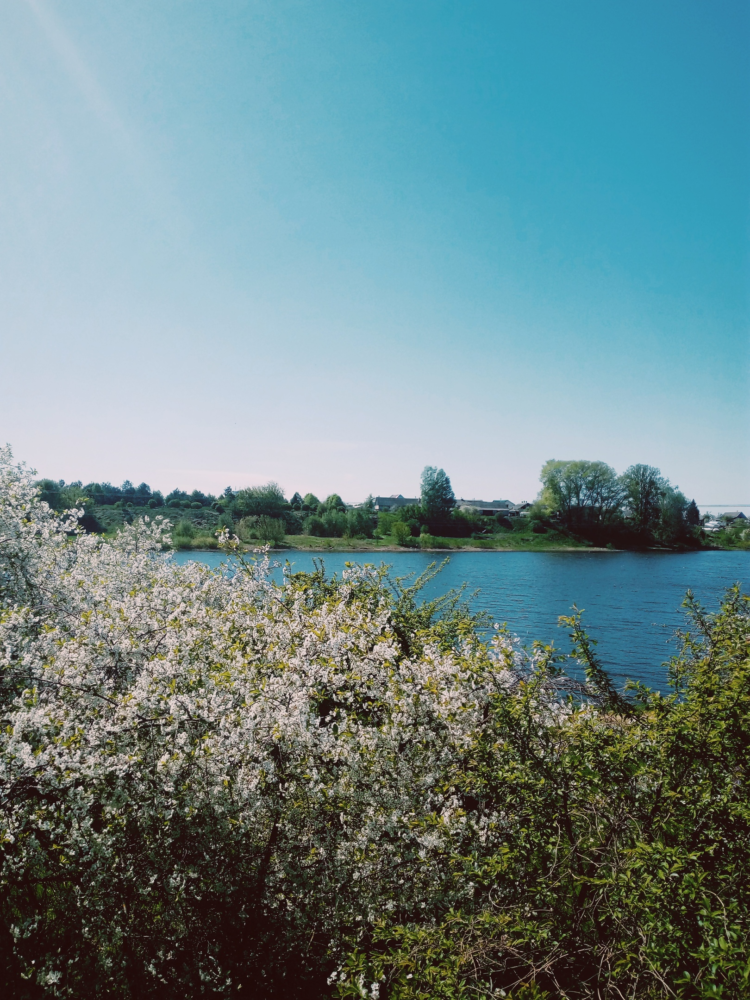

в Глубоком проходит фестиваль Дударскi рэй. ⠀ ⠀Смотрится дударский фестиваль в таком месте забавно. Исторического духа городу вроде хватает, но что-то не клеется. Чувство инородной инъекции. Волынщики + местная библиотека - эстетика, конечно, уникальная. Но все-таки запомнится мне это как на фото: среди цветения, на фоне костёла - красота. ⠀Итого: фестиваль экзотичный, для Глубокого это просто подарок (всяко интереснее вишнёвого бума). Музыканты собрались из Латвии, Польши, Литвы, Эстонии, Португалии. Играют и просто на улице, вне назначенного концерта. Длится 3 дня и на третий день плавно перетекает в Удело и Мосар. Ради этого стоит сюда приехать, тем более, в городе есть где погулять, посидеть и посмотреть на фонтан в центре озера (мг). ⠀
Glubokoe
